2 Data Organisation in Memory
2.1 Memory Hierarchy
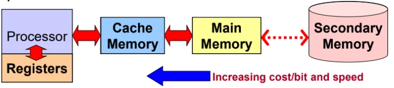
Registers Very fast access, but limited numbers within the CPU (2-128 registers). Operates at CPU clock rate.
Cache memory Fast access static RAM close to CPU. Typical access time 3-20ns, size up to 512kB.
Main memory Dynamic RAM or ROM. Typical access time 30-70nS, size up to 16GB.
Secondary memory Not always random access but non-volatile. Maybe be based on magnetic or flash technology. Typical access time 0.03-100mS, size: up to 4TB.
2.1.1 Main Memory
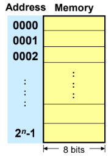
Each address location is byte-size (8 bits).
The memory size (the number of addresses) i.e. bytes, is dependent on the number of lines in the address bus.
Based on Von Neumann’s architecture, the memory stores both code (instructions) and data.
2.2 Number representation
| Type | Bytes | Bits | Range |
|---|---|---|---|
| signed char | 1 | 8 | |
| unsigned char | 1 | 8 | |
| short int | 2 | 16 | |
| unsigned short int | 2 | 16 | |
| unsigned int | 4 | 32 | |
| int | 4 | 32 | |
| long int | 4 | 32 | |
| long long int | 8 | 64 | |
| float | 4 | 32 | |
| double | 8 | 64 | |
| long double | 12 | 96 |
Note:
Integers can be signed or unsigned.
Floating point numbers are always signed.
2.2.1 Two ways of storing a multi-byte number
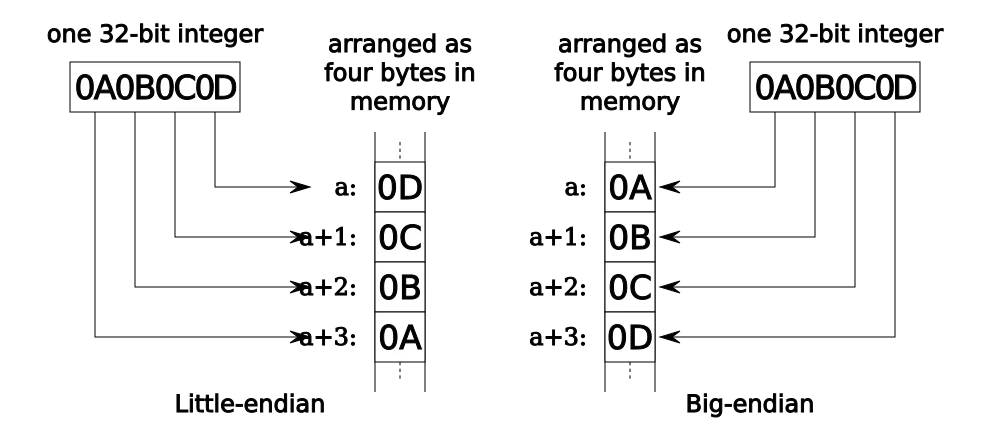
Little Endian - LSB at lowest address.
Big Endian - MSB at lowest address.
2.3 Character Representation
A char requires one byte (8 bits) of memory. The binary data is
transformed to some representative characters through some encoding
standard.
Some encoding standards:
7-bit ASCII code
DEC’s Sixbit (6-bit)
IBM’s EBCDIC (8-bit)
Unicode (16-bit)
Note that lower and upper case characters and digits are
contiguous.
Boolean variables have 2 states:
False = 0
True = non-zero
Most implementations use one byte (8 bits) to store a 1-bit Boolean value (inefficient). Some processors like the 8051 support a small portion of bit-addressable memory.
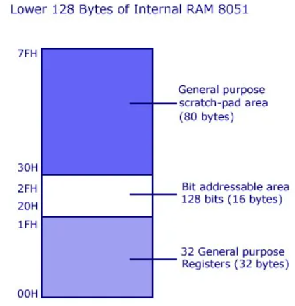
2.4 Array, String and Structure Representations
2.4.1 Arrays
A linear array is a consecutive area in memory storing a homogenous
data type.
Elements are accessed through some offset from the base address.
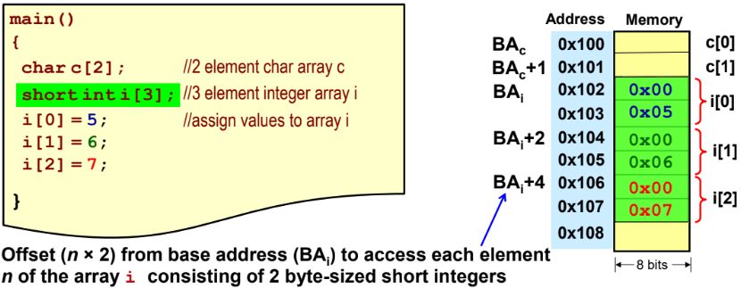
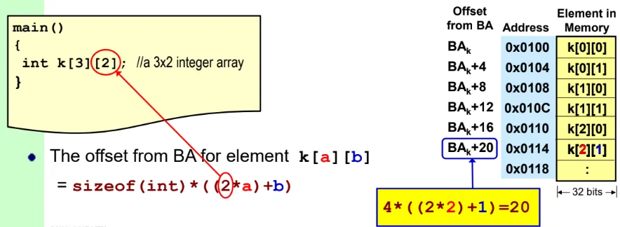
2.4.2 Strings
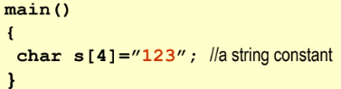
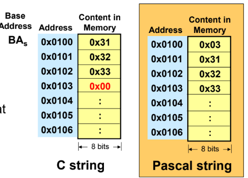
C strings have no length limit, whereas Pascal strings are limited to number of bytes used to store the length (e.g. 1 byte max 255 characters.)
C strings have no overhead (only one byte for \0) for length metadata, Pascal strings require space to store the length prefix.
Determining length of C string is O(n), for Pascal string is O(1).
2.4.3 Structures
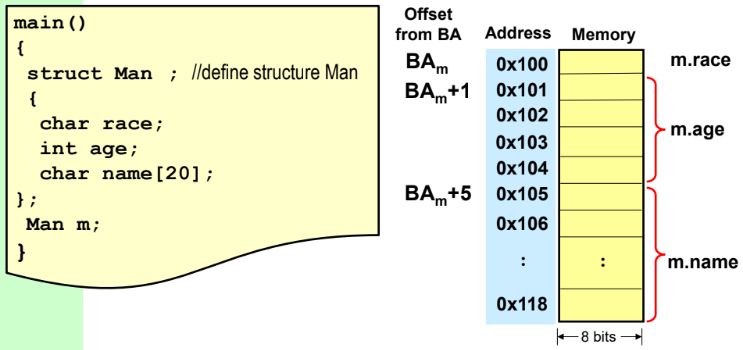
2.5 Pointer representation
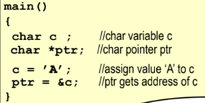
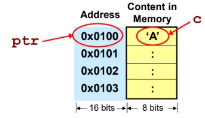
Use *ptr to dereference a pointer.
2.6 Data Alignment
| Data Type | Size (Byte) | Example of allowable start addresses due to alignment |
|---|---|---|
| char | 1 | 0x..0000, 0x..0001, 0x..0002 |
| short | 2 | 0x..0000, 0x..0002, 0x..0004 |
| int | 4 | 0x..0000, 0x..0004, 0x..0008 |
| float | 4 | 0x..0000, 0x..0004, 0x..0008 |
| double | 8 | 0x..0000, 0x..0008, 0x..0010 |
| pointer | 8 | 0x..0000, 0x..0008, 0x..0010 |
Assuming a 64-bit processor that uses 64-bits to represent an address.
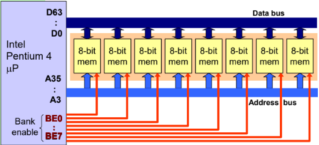
64-bit data bus The CPU fetches 64-bits every memory cycle.
33 address pins There are 8 byte "blocks".
8 Bank Enable pins select which 8-bits in that 64-bits block to read from.
The CPU has a 64-bit data word size.
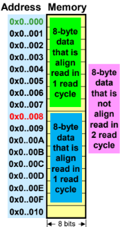
Since the CPU fetches 8 bytes at a time, any 8-byte data that is not aligned needs two memory cycles to be fetched.
If a processor has an 8 bit (1 byte) data bus, there won’t be any alignment issues.
Multi-byte data takes the same number of cycles to be fetched, regardless of the memory address.If a processor has a 16 bit (2 bytes) data bus, then 2, 4 or 8 byte data should be aligned to even addresses.
2.6.1 Data alignment in structures
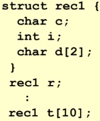
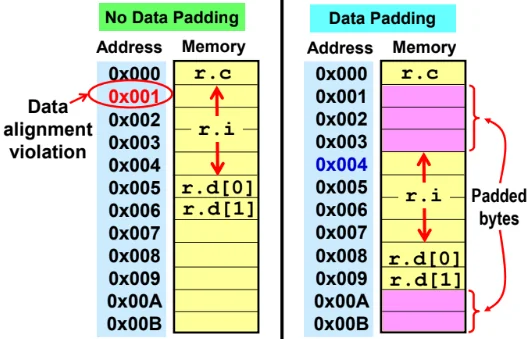
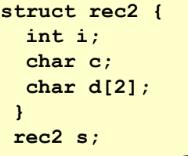
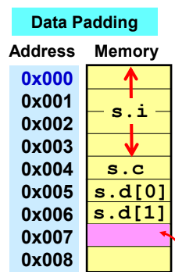